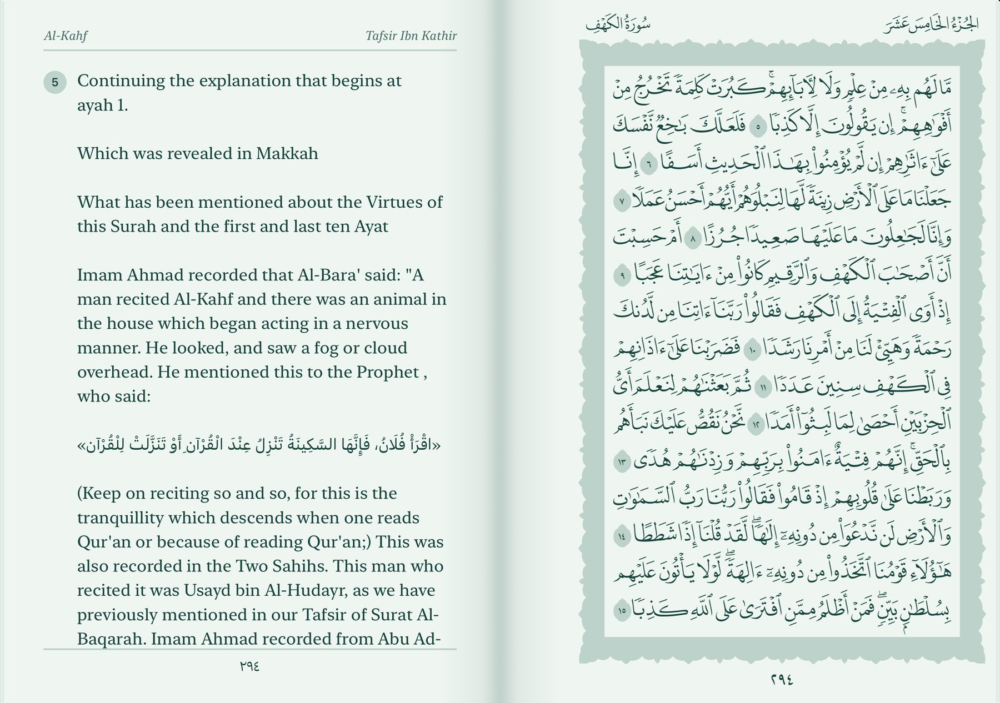
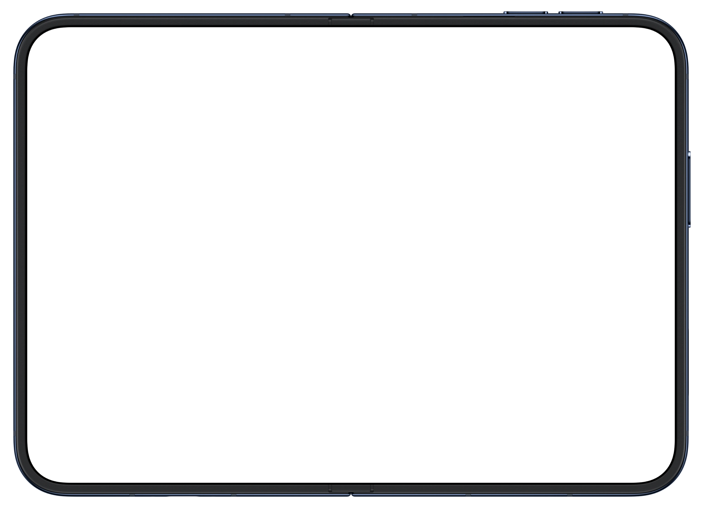
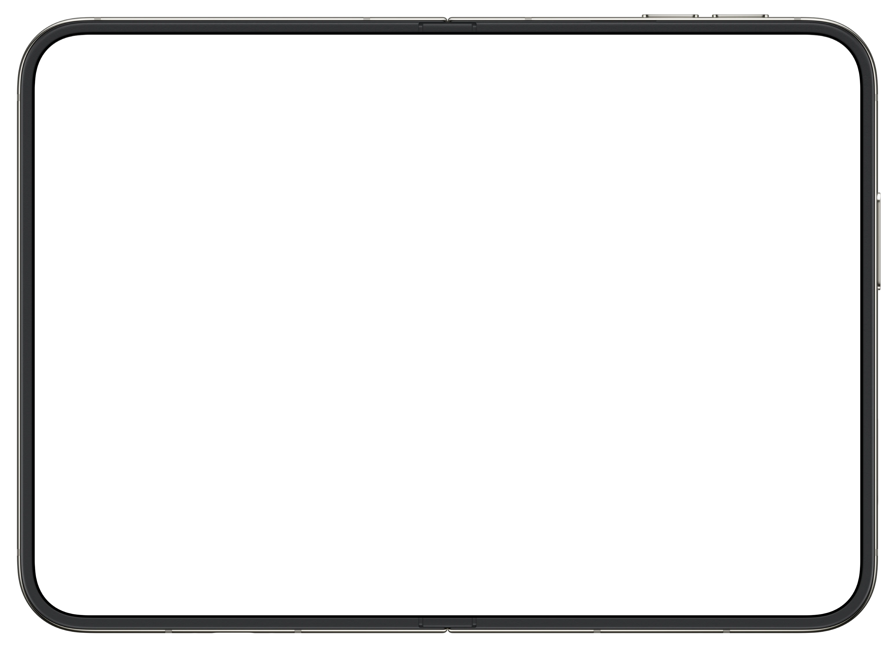
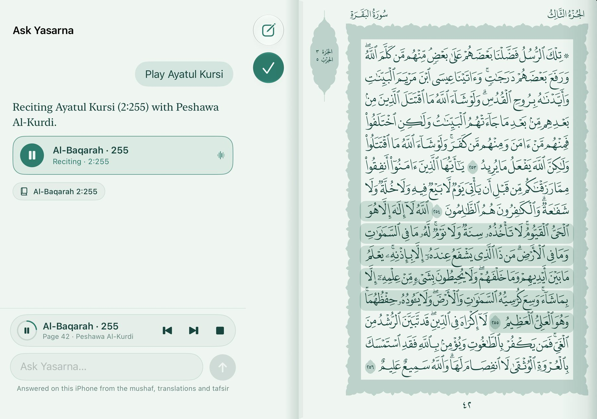
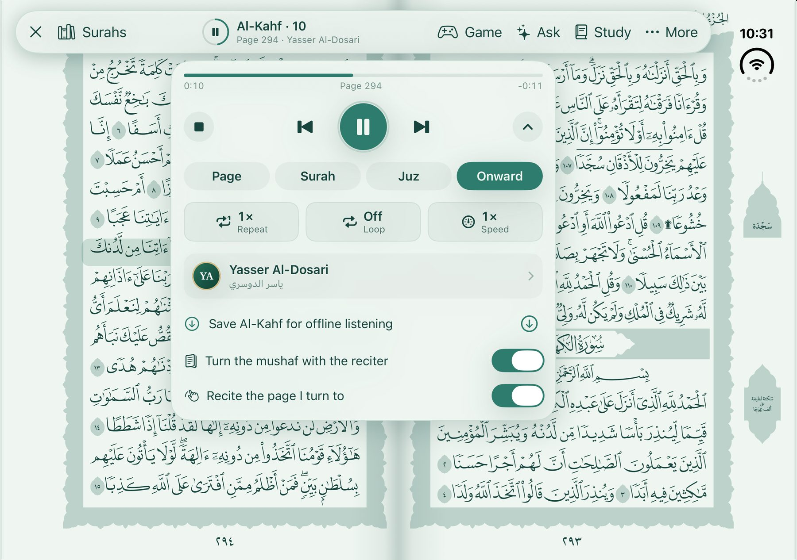
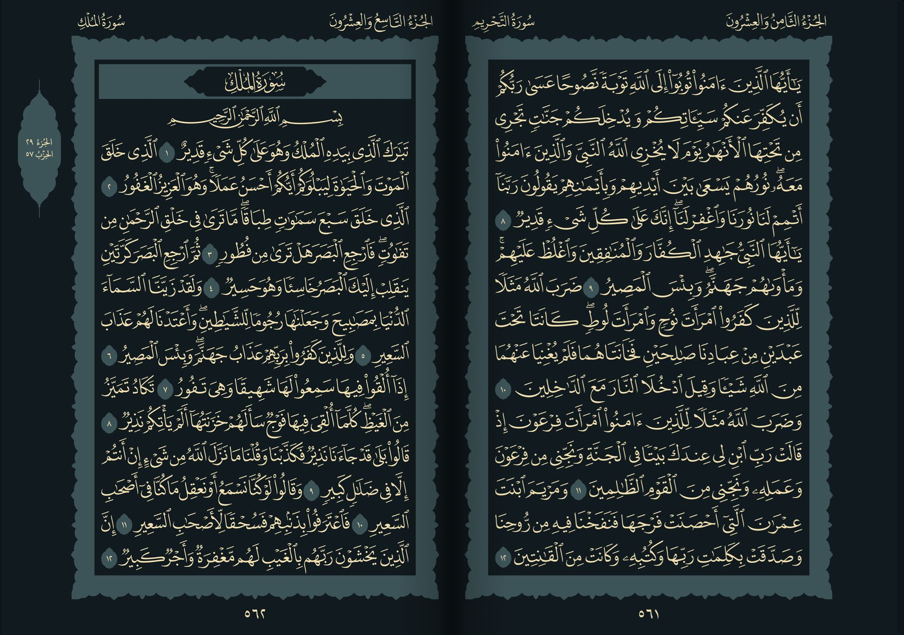
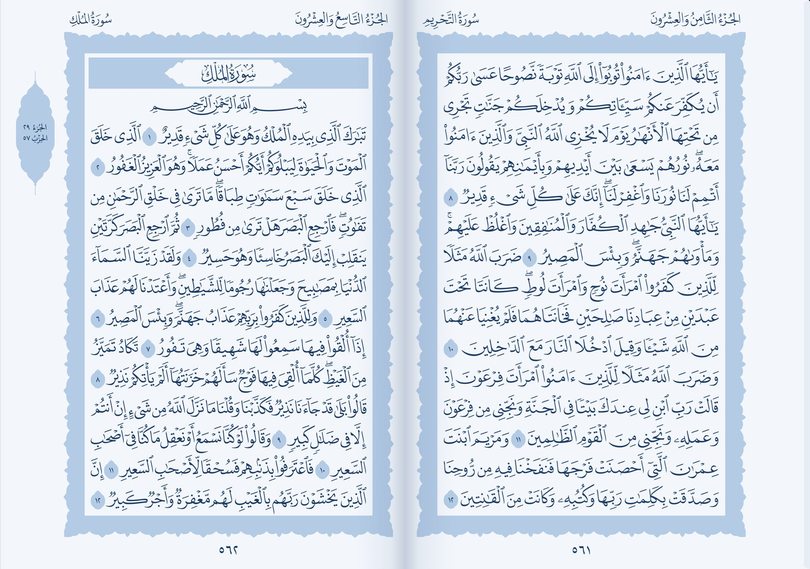
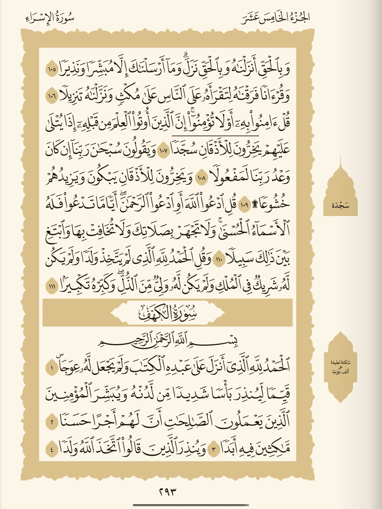
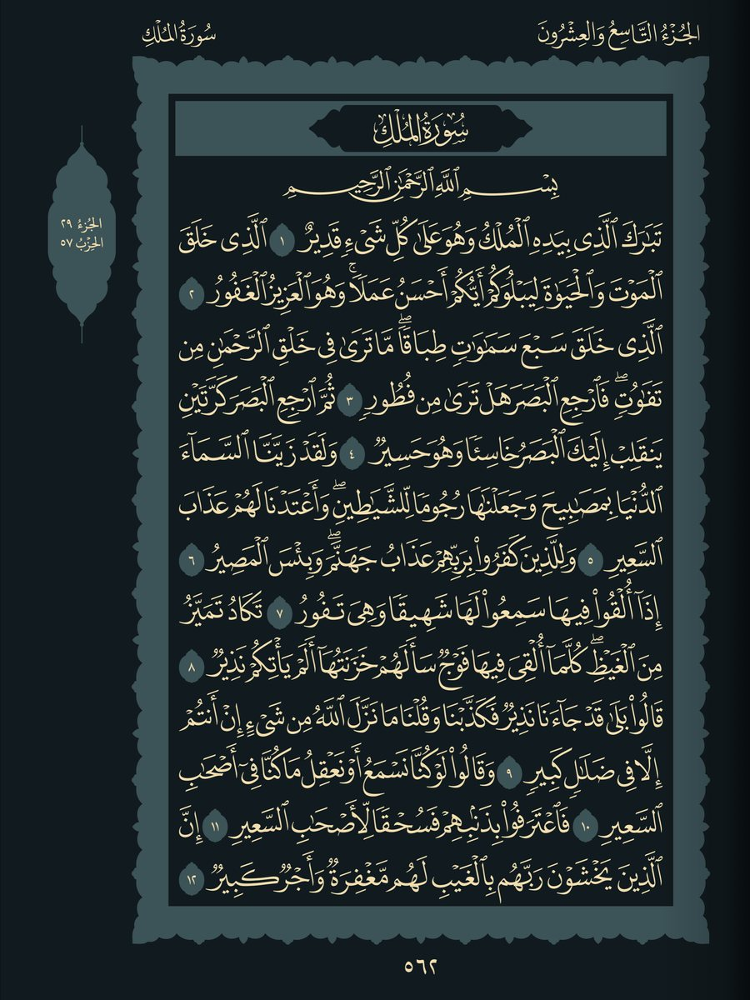
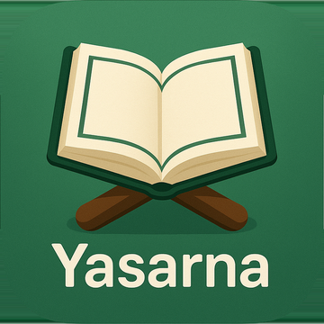

The meaning, on the facing page.
Tafsir Ibn Kathir or a translation beside the words it explains — English, Spanish, and Soninke for Al-Baqarah.

Yasarna Duo
The Madinah mushaf for iPhone Duo — exactly as it is printed, turned like paper, recited as you read.
وَلَقَدْ يَسَّرْنَا الْقُرْآنَ لِلذِّكْرِ
Closed, it’s a page.One page of the mushaf on the cover screen.
Open, it’s the book.Two facing pages, just as in your hands.

Swipe, or tap the margin, and the leaf lifts and turns from right to left, the way a mushaf is read. All 604 pages are drawn from the original King Fahd Complex artwork — and every one of them is on your device.

Tap an ayah and it is recited at once, lit softly on the page as the reciter reads it. The pages turn with the recitation — a page, a surah, a juz, or onward.
Tafsir Ibn Kathir or a translation beside the words it explains — English, Spanish, and Soninke for Al-Baqarah.

“Play Ayatul Kursi.” “Ayat about patience.” Answered on your device, from the mushaf and the tafsir.

Mishary Alafasy, Al-Husary, As-Sudais, Abdul Basit and more. Repeat, loop, slow down — and download any surah for the road.

Ten reading themes recolour the page itself — from Madinah Courtyard to Midnight Calm.

The gilding, the ink and the paper, all in one theme.

Upright, a full page fills the screen. On its side, the book opens across it — with Ask beside the Quran in either.


No account, no ads, no tracking. Your place, bookmarks and questions never leave your device. Yasarna Duo collects no data at all.

For iPhone Duo and iPad. Free.
فَاقْرَءُوا مَا تَيَسَّرَ مِنَ الْقُرْآنِ